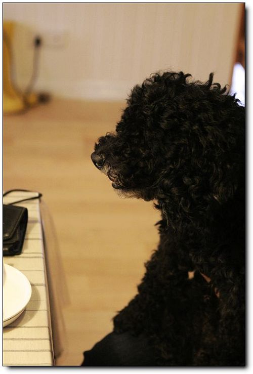
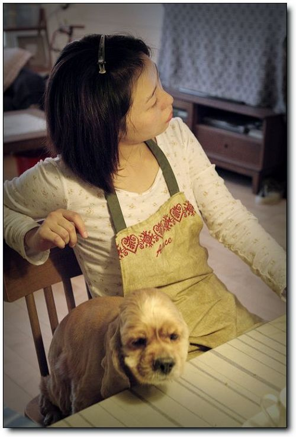
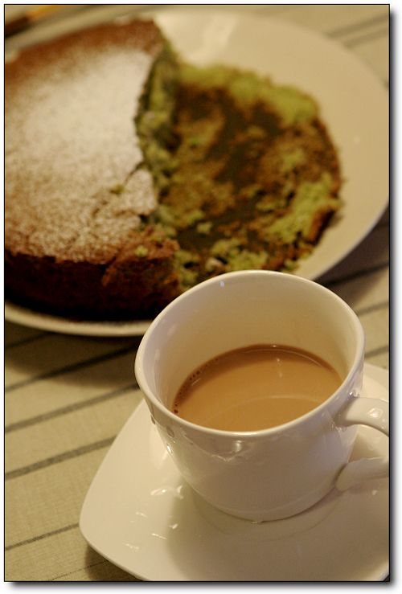
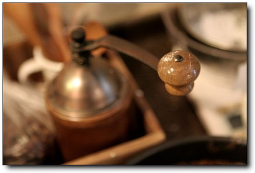
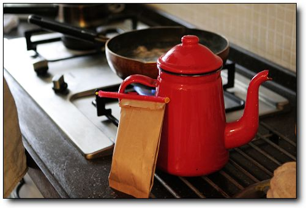
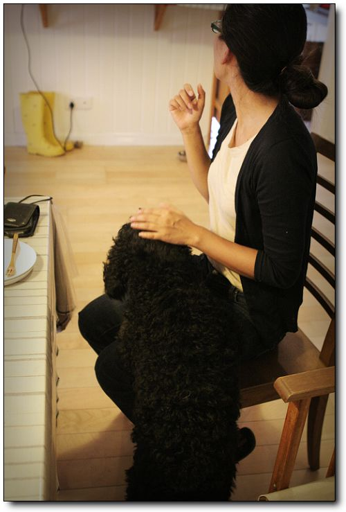

开心...不开心？ @ Aug 31, 2009
中午炒了两个好菜，很开心；
上周买了一双美鞋，很开心；
周末拥有一只镜头，很开心；
带Luke去社交，不开心。
它在人家家里画了两次地图、投了一次炸弹，大有占地为王之势！还和12岁的老爷爷打架。社交的它，完全变成另外一只狗，让我崩溃，面红耳赤、无地自容。想起它满脑子都是疯狂的炸弹气味儿~
试**镜
这只黑糊糊一片的12岁老爷爷，如果不笑的话，判断不出五官具体的位置，呵呵~

笑得好开心，完全找不到眼睛啦；

桌上的一点蛋糕渣让外外驻足凝神好久，即使春情荡漾的的可卡小姐站边上也没有美食这样令它倾心；

外外伸长脖子努力想与问问烤制的抹茶蛋糕靠近一点，再靠近一点，吃是外外毕生的追求与信仰，老爷爷和小伙子在桌子下面打架也影响不了它；

问问做的“抹茶乡村蛋糕”与口味类似“丝袜奶茶”的阿萨姆奶茶，贤惠啊~

这家稀奇陌生的东西真多。


12岁的米罗象一条温暖的皮草围巾；

人很忙，狗狗也很忙。

16 Responses to “开心...不开心？”
2009-08-31
估计拍风景能够看得出效果。不过，这双蛇皮纹的鞋子，真好看！
2009-08-31
试试日光下的人物？
2009-08-31
好严重的暗角。应该不是镜头本身问题。350D本来就是DX格式的，用FX的镜头不会有这么多的暗角。P上去的话就没意思了。
2009-08-31
哎呀，的确是P上去的，为了压暗光线，呵呵~
那我该怎么P呢？南京连续四天都是下雨天+阴天。学习中…
2009-08-31
圆头鞋穿起来一定很舒服吧。看你们一直在讨论着镜头，我是OUT了~~~：（
2009-08-31
不要OUT，我也不懂，讨论讨论就懂啦：P
2009-08-31
这鞋是我喜欢的风格~~~~看着心里都舒服
2009-08-31
I miss luke very much~~~
2009-08-31
呵呵~在柬埔寨开心吗？
2009-08-31
Crazy in the heavy rain~~~
2009-08-31
狗儿们都非常传神，还有那和米罗合影的下巴，也很美
2009-09-01
这样的社交活动有益主人和狗狗的身心健康:)
2009-09-01
那张凝视着面包屑的照片实在经典啊
2009-09-01
哈哈~估计给外外做一雕像，这表情就可以代表了。见着吃的，它就一直这么盯着，谁也不能靠近它盯着的食物，包括人！一靠近就开始呼了~
2009-09-01
昨天刚翻了很多问问的博客，今天就看到你去问问家作客啦，哈哈
2009-09-01
外外是老天赐给问问的童话主人公，他在认真书写自己的传奇！
Leave A Reply
存档只读，评论已关闭。